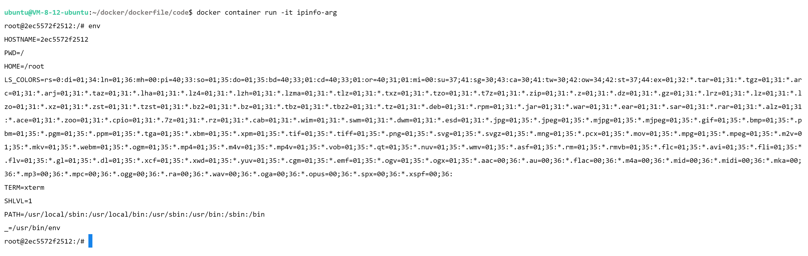

Dockerfile指南
RUN执行指令
1 | FROM ubuntu:20.04 |
1 | FROM ubuntu:20.04 |
进行比较：
文件的复制
ADD：同上，但在执行 <源文件> 为 tar 压缩文件的话，压缩格式为 gzip, bzip2 以及 xz 的情况下，会自动复制并解压到 <目标路径>。
Dockerfile-copy：
1 | FROM python:3.9.5-alpine3.13 |
Dockerfile-add：
1 | FROM python:3.9.5-alpine3.13 |
1 | docker buildx build -f Dockerfile-copy -t hello-copy . |
1 | docker buildx build -f Dockerfile-add -t hello-add . |
目录操作
Dockerfile-workdir：
1 | FROM python:3.9.5-alpine3.13 |
1 | docker buildx build -f Dockerfile-workdir -t hello-workdir . |
环境变量（ENV）和构建参数（ARG）
Dockerfile-env：
1 | FROM ubuntu:20.04 |
Dockerfile-arg：
1 | FROM ubuntu:20.04 |
1 | docker buildx build -f Dockerfile-env -t ipinfo-env . |
1 | docker buildx build -f Dockerfile-arg -t ipinfo-arg . |
区别：



容器启动命令
Dockerfile-cmd：
1 | FROM ubuntu:20.04 |
1 | docker buildx build -f Dockerfile-cmd -t demo-cmd . |
Dockerfile-entrypoint：
1 | FROM ubuntu:20.04 |
1 | docker buildx build -f Dockerfile-entrypoint -t demo-entrypoint . |
Dockerfile-both：
1 | FROM ubuntu:20.04 |
1 | docker buildx build -f Dockerfile-both -t demo-both . |
docker container run --rm -it demo-cmd：CMD命令和参数。docker container run --rm -it demo-cmd echo "hello world"：覆盖CMD命令和参数。docker container run --rm -it demo-entrypoint：ENTRYPOINT指定命令和参数。docker container run --rm -it demo-entrypoint echo "hello world"：参数送往ENTRYPOINT 指令指定的程序作为后续参数。docker container run --rm -it demo-both：ENTRYPOINT未接收参数且CMD内容为空。docker container run --rm -it demo-both "hello world"：参数送往ENTRYPOINT 指令指定的程序。

Demo：Python Flask
1 | FROM python:3.9.5-slim |
1 | docker buildx build -f Dockerfile -t demo-flask . |
1 | docker container run -d -p 5000:5000 demo-flask |
Dockerfile：注意
缓存
在编写 Dockerfile 时，合理使用缓存是非常重要的，因为它可以显著加速构建过程并减少带宽和资源的使用。Docker 在构建镜像时会使用缓存来避免重复执行相同的指令。相关指导原则：
- 从稳定基础镜像开始：基础镜像通常不会频繁更改，因此选择一个稳定的基础镜像可以使构建过程更快。尽量使用官方或经过验证的基础镜像。
- 将不变的层移到前面：在 Dockerfile 中，将不经常更改的层（例如安装依赖项）放在前面的步骤。这样在更改代码时，只会影响后面的层，前面的层可以重用缓存。
- 使用更精细的 COPY：使用
COPY指令时，尽可能地只复制需要的文件，避免复制整个目录。这可以减少无关文件的复制，从而提高缓存的效果。 - 利用缓存无效化机制：如果希望在某一步强制使缓存无效，可以通过在此步骤中进行更改（例如修改一个不存在的文件）来实现。这将导致 Docker 从这一步开始的缓存无效，强制重新构建。
- 避免不必要的更新：在构建过程中，避免频繁更新软件包或库，除非有明确的需要。频繁的更新可能导致缓存失效，影响构建速度。
- 清理不需要的内容：在构建过程中，确保清理不再需要的中间文件或缓存以减小镜像大小。
Dockerfile：
1 | FROM python:3.9.5-slim |
修改为：
1 | FROM python:3.9.5-slim |
.dockerignore
.dockerignore 文件是一个用于指定在构建 Docker 镜像时应该排除哪些文件和目录的配置文件。类似于 .gitignore 文件，.dockerignore 文件允许指定在构建镜像时应该忽略的文件和目录，从而减少构建上下文的大小，提高构建性能，并确保构建出的镜像仅包含必要的内容。
- 减小构建上下文的大小： 当构建上下文减小时，Docker 引擎传输的数据量减少，构建时间更短。
- 减小镜像大小： 构建上下文中不需要的文件和目录不会被包含在镜像中，从而减小镜像的大小。
- 提高构建性能： 在构建过程中，Docker 引擎不需要处理 .dockerignore 中指定的文件，从而提高了构建性能。
- 避免敏感信息泄漏： 使用 .dockerignore 可以确保敏感信息或不必要的文件不会被包含在镜像中。
.dockerignore 文件规则遵循类似于 .gitignore 文件的语法，可以使用通配符和模式匹配来定义要忽略的内容。
-
通配符：
*1
2# 排除所有 .log 文件
*.log -
目录通配符：
directory/1
2# 排除 directory 目录及其内容
directory/ -
递归通配符：
**1
2# 排除 directory 目录下的所有文件和子目录
directory/** -
排除指定文件：
!1
2# 不排除指定文件
!important.log -
注释：
# -
规则优先级：按照从上到下的顺序应用。先匹配的规则具有更高的优先级。
分阶段
分阶段构建：在某些情况下，可以使用多阶段构建来减少镜像的大小并优化缓存。
给定 C 程序：
1 |
|
Dockerfile-gcc：
1 | FROM gcc:9.4 |
Dockerfile-gcc-phased：
1 | FROM gcc:9.4 AS builder |
这两个 Dockerfile 都是用于构建一个简单的 C 程序，并在容器中运行它。两个 Dockerfile 都使用了不同的构建策略，一个是单阶段构建，另一个是多阶段构建。这种多阶段构建的方法可以减小最终镜像的大小，因为第一个阶段生成的中间可执行文件在最终阶段中被复制，而不需要包含编译工具和中间文件。这在实际应用中可以节省镜像大小，同时保留了可执行文件以在最终容器中运行。